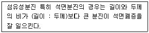
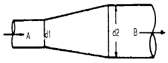

산업위생관리산업기사 (2003-08-10 기출문제)
1과목: 산업위생학 개론
1. 유해물질의 허용농도의 종류중 어떠한 경우에도 초과되어서는 안되는 농도를 나타내는 것은?
- TLV - TWA
- TLV - C
- TLV - STEL
- PEL
(정답률: 알수없음)

2. 바람직한 교대제도와 효과적인 관리에 대한 설명으로 알맞지 않는 것은?
- 야간근무의 연속은 2 ~ 3일 이상 연속하지 않는 것이 좋다.
- 근무시간의 간격은 15 ~ 16시간 이상으로 하는 것이 좋다.
- 야근시 가면은 작업강도에 따라 30분에서 1시간 범위로 하는 것이 좋다.
- 야근교대시간은 상오 0시 이전에 이루어지는 것이 좋다.
(정답률: 47%)
3. 공장의 기계설계시 인간공학적으로 인간과 기계관계의 비합리적인 면을 수정 보완하는 단계는?
- 준비단계
- 선택단계
- 검토단계
- 결정단계
(정답률: 70%)
4. 영양기준의 설정을 위한 개념과 가장 거리가 먼 것은?
- 충분량
- 작업량
- 지적량
- 이상량
(정답률: 47%)
5. 피부질환의 직접적 요인중 화학적요인에 관한 설명으로 알맞지 않은 것은?
- 색소변성 : 색소를 침착하는 물질로는 tar, pitch 등이 대표적이다.
- 모낭염 : 대표적인 것은 절삭유에 의한 것이다.
- 알레르기성 접촉피부염 : 직업성 접촉피부염의 80% 이상을 차지한다.
- 원발성 접촉피부염 : 산, 알칼리, 용제 등이 원인이다.
(정답률: 알수없음)
6. 산업피로의 증상으로 알맞지 않은 것은?
- 체온이 높아지나 피로정도가 심해지면 도리어 낮아진다.
- 호흡이 빨라지고 혈액중 이산화탄소량이 증가한다.
- 혈당치가 높아지고 젖산, 탄산이 증가한다.
- 혈압은 초기에는 높아지나 피로가 진행되면 도리어 낮아진다.
(정답률: 54%)
7. 생리적으로 가능한 작업시간의 한계를 지배하는 가장 중요한 인자는?
- 작업의 내용
- 작업의 공정
- 작업의 강도
- 작업의 방법
(정답률: 알수없음)
8. 어떤 작업의 강도를 알기 위하여 작업시 소요된 열량을 파악한 결과 3500㎉로 나타났다. 기초대사량이 1300㎉, 안정시 열량이 기초대사량의 1.2배인 경우 작업대사율(RMR)은 얼마인가?
- 0.82
- 1.22
- 1.41
- 1.49
(정답률: 60%)
9. 근로자가 특정한 유해물질에 노출되었을 때 체액이나 조직, 또는 호기 중에 나타나는 반응을 평가함으로서 근로자의 노출정도를 권고하는 기준은?
- TLVs
- BEIs
- PELs
- MAXs
(정답률: 74%)
10. 생산성 향상을 위해 기계와 작업대의 높이를 조절하고자 한다. 작업자의 신체로부터 일할 수 있는 최대 작업역에 대한 설명이 바르게 된 것은?
- 작업자가 작업할 때 어깨를 뻗어서 닿는 범위
- 작업자가 작업할 때 상지(上肢)를 뻗어서 닿는 범위
- 작업자가 작업할 때 전박(前膊)과 손으로 조작할 수 있는 범위
- 작업자가 작업할 때 사지(四肢)를 뻗어서 닿는 범위
(정답률: 60%)
11. 다음 전신피로 중 생리학적 원인과 가장 거리가 먼것은?
- 산소 공급부족
- 근육에서 측정된 EMG의 증가
- 혈중 포도당 농도의 저하
- 근육내 글리코겐량의 감소
(정답률: 알수없음)
12. 작업강도와 작업대사율을 잘못 연결한 것은?
- 경작업(輕作業) : 0∼1
- 중작업(重作業) : 1∼2
- 강작업 : 2∼4
- 격심작업 : 7이상
(정답률: 알수없음)
13. 영양소 중 지방 1g이 체내에서 산화, 연소할 때 내는 열량은?
- 4 kcal
- 9 kcal
- 15 kcal
- 18 kcal
(정답률: 58%)
14. 비타민 B1은 신체의 어느 부위를 위하여 특히 주의하여 보급해야 하는가?
- 눈
- 생식기능
- 근육
- 혈액
(정답률: 78%)
15. 젊은 남성의 육체적 작업능력(PWC)은 16kcal/min이다. 이 때 하루 8시간 동안 작업할 수 있는 작업의 강도로 가장 적절한 것은?
- 4.0 kcal/min
- 4.5 kcal/min
- 5.3 kcal/min
- 8.0 kcal/min
(정답률: 59%)
16. 어떤 화학공장에서 400명의 근로자가 1년동안 작업하는 가운데 손실작업일수 4일 이상인 재해가 30건 발생하였다. 이때 이 공장에서 발생한 재해의 도수율(빈도율)은? (단, 1년 작업일수 300일, 1일 8시간 근무 기준)
- 26.26
- 28.75
- 31.25
- 33.75
(정답률: 100%)
17. 다음중 산업보건관련기관의 명칭이 잘못 짝지워진 것은?
- 미국산업위생학회-AIHA
- 영국산업위생학회-BOHS
- 미국산업안전보건청-OSHA
- 미국산업위생전문가협의회-NIOSH
(정답률: 70%)
18. 산업피로의 방지대책으로 적절치 않은 것은?
- 불필요한 동작을 피하고 에너지 소모를 적게한다.
- 작업시간중 또는 작업전후에 간단한 체조나 오락시간을 갖는다.
- 너무 정적인 작업은 피로를 더하게 되므로 동적인 작업으로 전환한다.
- 일반적으로 단시간씩 여러번 나누어 휴식하는 것보다 장시간 한번 휴식하는 것이 피로회복에 도움이 된다.
(정답률: 93%)
19. 다음 중 산업위생의 역사적 인물과 업적을 잘못 연결한 것은?
- Galen - 광산에서의 산 증기 위험성 보고
- Sir George Baker - 사이다 공장에서 납에 의한 복통 발표
- Robert Owen - 굴뚝청소부법의 제정에 기여
- Alice Hamilton - 미국 최초의 산업위생학자이며 산업의학자로 인정받음
(정답률: 82%)
20. 작업대사량이 4,000kcal 이고, 기초대사량이 1,500kcal인 작업자가 계속하여 작업할 수 있는 계속작업 한계시간(CWT)은 약 얼마인가? (단, log(CWT) = 3.724 - 3.25log(RMR) 적용)
- 120분
- 170분
- 220분
- 280분
(정답률: 알수없음)
2과목: 작업환경측정 및 평가
21. 실리카겔이 활성탄에 비해 갖는 장· 단점으로 틀린 것은?
- 수분을 잘 흡수하는 단점을 가지고 있다.
- 활성탄으로 채취가 어려운 아닐린, 오르쏘-톨루이딘 등의 아민류나 몇몇 무기물질의 채취가 가능하다.
- 추출액이 화학분석이나 기기분석에 방해물질로 작용하는 경우가 많지 않다.
- 이황화탄소를 주탈착용매로 하여 쉽게 탈착시킨다.
(정답률: 65%)
22. 감각적인 음의 크기를 나타내는 양으로 1000Hz 순음의 크기와 평균적으로 같은 크기로 느끼는 1000Hz 순음의 음의 세기레벨로 나타낸 것은?
- dB
- sone
- phon
- PWL
(정답률: 25%)
23. 공기중 납을 여과지에 채취하고 회화한 후 시료의 최종 용액을 10 mL로 맞추었다. 이 시료용액을 검량선과 비교한 결과 용액중 농도는 35μg/mℓ 이었다. 여과지에 채취된, 즉 채취한 공기시료중 Pb의 양은 몇 mg인가?
- 0.0035
- 0.035
- 0.35
- 3.5
(정답률: 38%)
24. 공기중에 Carbon tetrachloride(TLV=10ppm) 5ppm, 1,2-dichloroethane(TLV=50ppm) 20ppm이 함유되어 있는 경우 이 혼합물질의 허용한계치는?
- 25.8 ppm
- 26.8 ppm
- 27.8 ppm
- 28.8 ppm
(정답률: 28%)
25. 석면의 농도를 표시하는 단위로 적절한 것은?
- 개/㎝3
- ㎎/m3
- ㎎/ℓ
- ㎍/m3
(정답률: 100%)
26. 입자의 크기를 고려한 측정기구 중 사이클론이 입경분립 충돌기에 비해 가지는 장점이 아닌 것은?
- 사용이 간편하고 경제적이다.
- 시료입자의 되튐으로 인한 손실 염려가 없다.
- 매체의 코팅과 같은 별도의 특별한 처리가 필요 없다
- 입자의 질량크기 분포를 얻을 수 있다.
(정답률: 65%)
27. 가스상 또는 증기상 물질의 채취에 이용되는 흡착제 중의 하나인 다공성중합체에 포함되지 않는 것은?
- Tenax GC
- XAD관
- Choromosorb
- Ambersorbs
(정답률: 알수없음)
28. 측정기구의 보정을 위한 '2차 표준'으로서 유량측정시 가장 흔히 사용되는 것은?
- 비누거품미터
- 가스미터
- 피토우 튜브
- 로타미터
(정답률: 알수없음)
29. 작업장(1기압, 25℃)에서 CO농도를 측정하였더니 20ppm을 나타내었다. 중량농도로 알맞게 환산한 값은?
- 약 16㎎/m3
- 약 19㎎/m3
- 약 23㎎/m3
- 약 25㎎/m3
(정답률: 64%)
30. 다음 중 검지관의 장점에 대한 설명으로 틀린 것은?
- 사용이 간편하다.
- 특이도가 높다.
- 반응시간이 빠르다.
- 숙련된 산업위생전문가가 아니더라도 어느 정도 숙지하면 사용할 수 있다.
(정답률: 74%)
31. 가스크로마토그래피로 유해가스를 측정할 때 사용하는 검출기가 아닌 것은?
- ECD(전자포획형검출기)
- TCD(열전도도검출기)
- FID(불꽃이온화검출기)
- UVD(자외선검출기)
(정답률: 알수없음)
32. charcoal tube (활성탄튜브)는 아래 포집법중 어느 것에 해당되는가?
- 직접포집법
- 여과포집법
- 액체포집법
- 고체포집법
(정답률: 50%)
33. 0.01%(v/v)은 몇 ppm인가?
- 1
- 10
- 100
- 1000
(정답률: 50%)
34. 소음의 음압도(SPL)의 식으로 옳은 것은? (단, P0 = 최소 음압실효치(2 × 10-5 N/m2))
- 10 log(P / P0)
- 20 log(P / P0)
- 30 log(P / P0)
- 40 log(P / P0)
(정답률: 62%)
35. 40% 헵탄(heptane), 40% 메틸클로로포름(methyl chloroform), 20% 퍼클로로에틸렌(perchloro ethylene)의 중량조성을 가진 용제가 증발되고 있다. 이 때 각각의 TLV는 1400㎎/m3, 1000㎎/m3, 420㎎/m3 이라면 이 작업장의 혼합물 농도는? (단, TLV는 법규상 실제 허용농도는 아님)
- 861㎎/m3
- 885㎎/m3
- 923㎎/m3
- 957㎎/m3
(정답률: 77%)
36. 0.001N - NaOH 수용액 중의 [H+]는 몇 mole/ℓ 인가?
- 1 × 10-3
- 1 × 10-13
- 1 × 10-11
- 1 × 10-12
(정답률: 알수없음)
37. 산에 쉽게 용해되므로 입자상물질 중의 금속을 채취하여 원자흡광법으로 분석하는데 적당하며 유리섬유, 석면 분진등 현미경분석을 위한 시료채취에도 이용되는 막여과지는?
- Glass fiber membrane filter
- Poly vinylchloride membrane filter
- Mixed cellulose ester membrane filter
- Trllon membrane filter
(정답률: 70%)
38. 옥외 작업장의 온열조건이 다음과 같을 때 습구흑구 온도지수(WBGT)를 계산하면? (단, 자연습구온도 : 20℃, 흑구온도 : 50℃, 건구온도 : 30℃)
- 27℃
- 32℃
- 40℃
- 53℃
(정답률: 92%)
39. 흡광광도법에서 세기 Io의 단색광이 시료액을 통과하여 그 광의 90%가 흡수되었을 때 흡광도는?
- 0.1
- 0.5
- 1.0
- 1.5
(정답률: 70%)
40. 중량분석방법으로 적당하지 않은 것은?
- 침전법
- 산화환원법
- 전해법
- 용매추출법
(정답률: 62%)
3과목: 작업환경관리
41. 진동으로 손가락의 말초혈관운동 장해때문에 손가락이 창백하여지고 동통을 느끼는 현상은?
- Silicosis
- Crowd poison
- Caison disease
- Raynaud's 현상
(정답률: 알수없음)
42. 저산소 상태에서 발생할 수 있는 질병(산소결핍증)으로 가장 알맞는 것은?
- Oxygen poison
- Casson disease
- Crowd poison
- Hypoxia
(정답률: 90%)
43. 이 물질을 체내로 흡입하게 되면 부식성이 강하여 점막등에 침착되면 궤양을 유발하고 장기적으로 취급하면 비중격 천공을 일으킨다. 이 물질명은?
- 크롬산
- 아세톤
- 수은
- 카드뮴
(정답률: 67%)
44. 일반소음을 차음하기 위해 차음벽을 설치할 때 벽체의 단위표면적에 대하여 벽체의 무게를 2배로 할 때 마다 몇 dB씩 차음효과가 증가하는가?
- 3dB
- 6dB
- 9dB
- 12dB
(정답률: 30%)
45. 작업환경 개선의 기본대책중 하나인 대치의 방법과 가장 거리가 먼 것은?
- 시설의 변경
- 공정의 변경
- 물질의 변경
- 위치의 변경
(정답률: 40%)
46. 일반적으로 저주파 차진에 좋고 환경요소에 저항이 크나 감쇠가 거의 없고 공진시에 전달률이 매우 큰 방진재료는?
- 금속 스프링
- 방진고무
- 공기 스프링
- 코르크
(정답률: 알수없음)
47. 산업장에서 사용물질의 독성이나 위험성을 줄이기 위하여 사용물질을 변경하는 경우로 옳은 것은?
- Perchloroethylene을 석유 나프타로
- 성냥제조시 황린을 적린으로
- 1,1,1-trichloroethane를 사염화탄소로
- 야광시계의 자판을 인에서 라듐으로
(정답률: 72%)
48. 강한 산이나 알카리 등을 다루는 작업에서 사용되는 보호복의 재질(침투시킨 것)로 가장 적당한 것은?
- 석면
- 알루미늄
- 면섬유
- 고무
(정답률: 59%)
49. 위생보호구인 Goggle은 다음 어느 보호구에 속하는가?
- 방진보호구
- 호흡용보호구
- 차광보호구
- 피부보호구
(정답률: 93%)
50. 다음 중 가장 적절한 기준이 되는 ( )안의 비율은?

- 2 : 1
- 3 : 1
- 4 : 1
- 5 : 1
(정답률: 42%)
51. 국소진동의 경우에 주로 문제가 되는 주파수범위로 가장 적절한 것은?
- 8 ~ 1500㎐
- 2 ~ 100㎐
- 4 ~ 8㎐
- 12 ~ 25㎐
(정답률: 54%)
52. 유기용제인 크실렌의 생물학적 폭로지표로 이용되는 대사산물은?
- 만델린산
- 벤젠
- 메틸마뇨산
- 톨루엔
(정답률: 50%)
53. 장시간의 고온 환경에 폭로되어 다량의 염분 상실을 수반한 발한 과다 때문에 발생하며, 일시적으로 단백뇨가 나오는 건강 장해는?
- 열경련
- 열피로
- 열사병
- 열쇠약
(정답률: 77%)
54. 다음은 진동의 크기를 나타내는 용어 중 물체가 정상정지 위치에서 일정 시간내에 도달하는 위치까지의 거리로 표현되는 것은?
- 가속도(acceleration)
- 속도(velocity)
- 변위(displacement)
- 공명(resonance)
(정답률: 50%)
55. 초음파에 관한 설명으로 틀린 것은?
- 가청영역 이상의 주파수를 가진음을 초음파라고 한다
- 고주파성 초음파는 공기중에서 쉽게 전파되지 않는다
- 저주파성 초음파는 직접 접촉하는 경우를 제외하고 건강상 문제를 일으키지 않는다.
- 초음파는 흡수매체를 가열하는 성질을 지녔으나 주파수가 높을수록 전달매체내에서 크게 흡수되어 조직투과력은 약해진다.
(정답률: 50%)
56. 기압으로 인한 화학적 장해(2차적인 가압현상)중 질소로 인한 마취작용은 보통 몇기압 이상에서 발생하는가?
- 2기압
- 3기압
- 4기압
- 5기압
(정답률: 67%)
57. 전신체온강하에 관한 설명으로 틀린 것은?
- 장기간의 한랭폭로와 체열상실에 따라 발생한다.
- 급성 중증장해이다.
- 진정제 복용과 음주는 체온하강의 위험을 더욱 증대시킨다.
- 피로가 극에 달하면 혈관의 급격한 수축으로 인하여 전신의 체온강하가 일어난다.
(정답률: 25%)
58. 한 개 또는 두 개 이상의 유해물질이 공존하여 건강에 미치는 작용 중 현재 허용 기준이 설정되어 있는 것으로 알맞게 짝지어진 것은?
- 독립작용과 상승작용
- 상가작용과 길항작용
- 상승작용과 상가작용
- 독립작용과 상가작용
(정답률: 47%)
59. 피조사체 1g에 대하여 100erg의 방사선에너지가 흡수되는 선량 단위의 약자를 나타낸 것은?
- R
- Ci
- rem
- rad
(정답률: 67%)
60. 분진작업장의 작업환경관리 대책과 가장 거리가 먼 것은?
- 습식작업
- 국소배기장치 설치
- 방독마스크 착용
- 발산원 밀폐
(정답률: 알수없음)
4과목: 산업환기
61. 구조 및 원리가 간단하며 비교적 큰 입자 제거에 효율적이고 고온가스 중의 입자상 물질제거가 가능하여 덕트 중간에 설치할 수도 있는 집진장치는?
- 관성력 집진장치
- 전기집진장치
- 세정집진장치
- 여과집진장치
(정답률: 0%)
62. 원형이나 정사각형 후드의 필요환기량 공식인 "Q=V(10x2 + A)"는 Dalla Valle이 제시하였다. 이 공식은 오염원에서 후드까지의 거리가 덕트 직경의 몇 배 이내일 때에만 유효한가?
- 0.5배
- 1.5배
- 2.5배
- 3.5배
(정답률: 70%)
63. 국소배기시스템의 압력손실이 증가되는 경우와 가장 거리가 먼 것은?
- 닥트의 직경을 줄인다.
- 곡관의 곡률반경을 크게 한다.
- 닥트를 길게 한다.
- 닥트를 급격하게 구부린다.
(정답률: 70%)
64. 발생기류가 높고 유해물질이 활발하게 발생하는 작업조건(스프레이도장, 용기충전, 콘베이어 적재, 분쇄기)에서의 제어속도로 가장 알맞는 범위는? (단, 단위는 m/sec )
- 1.25 - 0.25
- 0.25 - 0.50
- 0.50 - 1.00
- 1.00 - 2.50
(정답률: 60%)
65. 산업환기시설을 점검할 때 가장 일반적으로 사용되는 발연관(SMOKE TUBE)에 대한 설명으로 잘못된 것은?
- 대략적인 후드의 성능을 평가할 수 있다.
- 작업장 내의 공기의 유동현상과 이동방향을 알 수있다.
- 10 -20m/s 범위의 빠른 유속을 손쉽게 측정할 수있다.
- 연기발생기에서 발생되는 연기는 부식성과 화재위험성이 있을 수 있다.
(정답률: 28%)
66. 싸이크론의 집진 효율을 향상시키기 위해 Blow down방법을 이용할 때 더스트박스 또는 호퍼부에서 처리 가스량의 몇 %를 흡입하는 것이 가장 이상적인가?
- 1 ~ 5%
- 5 ~ 10%
- 10 ~ 20%
- 20 ~ 30%
(정답률: 59%)
67. 기체유량이 10m3/sec로 그림의 A점을 지나 원형관내를 흐르고 있다. B지점에서의 유속 V(m/sec)는? (단, d1 = 0.2m, d2 = 0.4m이다.)

- 60.6
- 71.1
- 47.1
- 79.6
(정답률: 32%)
68. 희석환기는 다음과 같은 작업장의 공기오염에 대하여 적용하고 있다. 틀린 것은?
- 독성이 높다.
- 발생원이 움직인다.
- 발생량이 적다.
- 발생량이 일정하다.
(정답률: 37%)
69. 송풍기의 회전수를 조절하여 풍량을 2배 증가시켰다면 동력은 몇 배 증가 하겠는가?
- 2배
- 4배
- 6배
- 8배
(정답률: 50%)
70. 닥트내에 흐르는 공기의 속도압이 4mmH2O이다. 닥트내의 유속은? (단, 공기의 비중량은 1.2kg/m3이다.)
- 5.7 m/sec
- 7.2 m/sec
- 8.1 m/sec
- 9.6 m/sec
(정답률: 50%)
71. 국소배기장치의 설계에서 제어속도(포촉속도)를 결정할때 고려할 사항과 가장 거리가 먼 것은?
- 오염물질의 비산방향
- 오염물질의 비산거리
- 후드의 형식
- 오염물질의 허용농도
(정답률: 30%)
72. 국소배기 후드 뒷 부분에 압력 충만실(플레넘)을 설치하는 이유로 가장 적절한 것은?
- 후드 입구 균일류 형성
- 압력손실을 최소화
- 배기유량을 최소화
- 소음발생의 최소화
(정답률: 알수없음)
73. 전기집진장치의 장점이 아닌 것은?
- 압력손실이 비교적 낮다.
- 고온가스 처리가 가능하다.
- 집진 효율이 높다.
- 설치비용이 저렴하다.
(정답률: 85%)
74. 90° 곡관의 내경에 대한 곡률반경비가 2.0일 때 압력손실계수는 0.27이다. 속도압이 14㎜H2O라면 이 곡관의 압력손실(㎜H2O)은?
- 3.78
- 4.20
- 4.42
- 7.41
(정답률: 46%)
75. 온도 150℃, 압력 720mmHg 상태에서 배기가스 체적이 100m3이라면 표준상태(0℃,1atm)에서 배기가스의 체적은?
- 61 Nm3
- 64 Nm3
- 69 Nm3
- 73 Nm3
(정답률: 38%)
76. 송풍기의 소요동력(KW) 계산식은 ? (단, QS는 송풍량(m3/min), PTf : 송풍기의 전압(㎜H2O) )
- (QS × PTf) / 6,120
- QS / (6,120 × PTf)
- (6,120 × PTf) / QS
- 6,120 / (QS × PTf)
(정답률: 알수없음)
77. 사무실 직원이 모두 퇴근한 직후인 오후 6시에 측정한 공기 중 CO2농도는 1200ppm, 사무실이 빈 상태로 2시간이 경과한 오후 8시에 측정한 CO2농도는 400ppm이었다면 이 사무실의 시간당 공기교환 횟수는? (단, 외부공기중 CO2농도는 330ppm이라고 가정함)
- 0.26
- 0.65
- 0.89
- 1.26
(정답률: 20%)
78. 탁상형 그라인더 작업에서 발생되는 분진을 제어하기 위해 설치한 국소배기장치에서 송풍기 정압이 갑자기 증가하였다. 그 원인이 될 수 없는 것은?
- 백필터 분진 퇴적
- 덕트라인 분진 퇴적
- 후드에 부착된 댐퍼가 닫힘
- 백필터가 파손되어 분진이 제진되지 않음
(정답률: 50%)
79. 일반적으로 창이나 측벽에 설치되어 공기를 직접 대기로 방출하는 저풍압, 대풍량의 전체 환기용으로 많이 사용하는 송풍기의 종류는?
- 다익팬
- 프로펠러팬
- 사류팬
- 횡류팬
(정답률: 40%)
80. 송풍량이 증가해도 동력이 증가하지 않는 장점을 가지며 한계부하송풍기라고도 하는 송풍기는?
- 축류날개형송풍기
- 전향날개형송풍기
- 후향날개형송풍기
- 프로펠러형송풍기
(정답률: 60%)